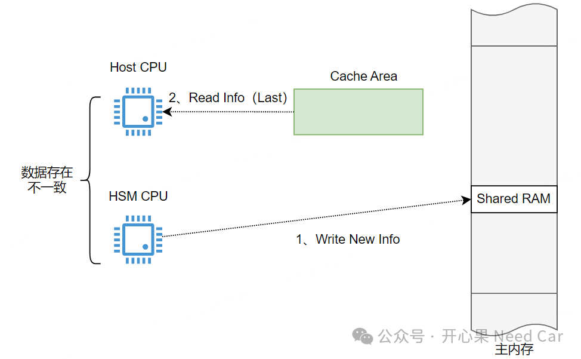
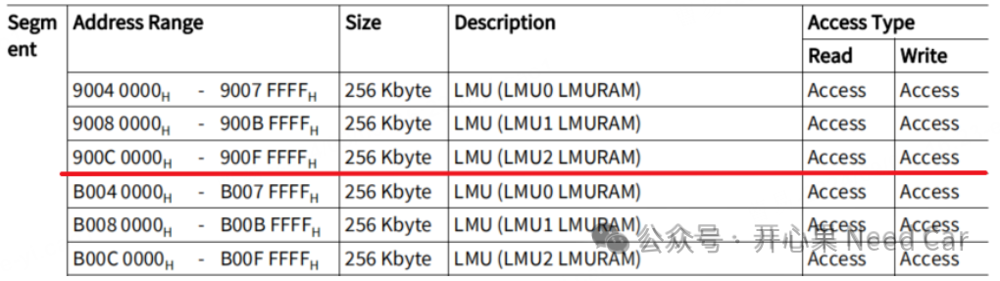
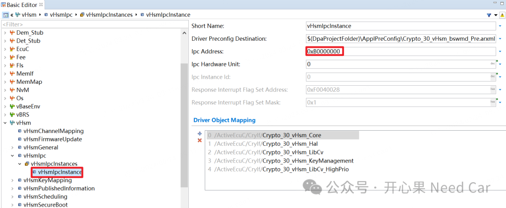

核间通信（IPC，Inter-processor communication）或者进程间通信，常常会使用共享RAM区（Shared RAM）交互信息。但是，这个RAM区域应该如何选呢？本文，聊一聊这个话题。
先说结论：IPC通信的共享RAM区，尽量不要用cache区域，避免数据不一致问题。
我们知道，为了提高CPU的工作效率，项目中，往往会选择开启cache功能(一般默认开启cache功能)。可是，开启cache以后就万事大吉了吗？显然不是，使用cache，工程中最需要关注的就是数据一致性问题。
如果使用的芯片是TC3xx系列，在HSM（Hardware Security Module）的开发手册中，会有对应的描述：提示使用cache可能造成的数据不一致问题，具体描述如下：
Accessing the same host resource through the cache on the one hand and through SAHMEM on the other hand can lead to inconsistency. |
提示：SAHMEM是HSM Bridge模块的一个寄存器。

举例：HSM CPU和Host CPU在主内存开辟了一块共享RAM区，同时，使能了cache功能。某次，HSM CPU向主内存区写入新的信息，但是，由于Cache Area区域缓存过对应的地址信息，当Host CPU访问时，直接命中（hit），而Host CPU获取的数据，实际是上次缓存的旧数据，并不是HSM CPU写入的新数据，如此，就会造成HSM CPU写入和Host CPU实际读取数据不一致问题，该如何处理呢？为了避免数据不一致，IPC通信中，在选择共享RAM区时，应当尽可能选择non-cache区域。那么，如何选择non-cache的RAM区域呢？以Tc3xx为例，有一块DLMU（Distributed Local Memory Unit），在Segment 9，属于cached区域，对应的non-cached区域在Segment B，示意如下：

Segment 9和Segment B属于SRAM（Static RAM，静态RAM）。所以，如果将共享RAM区划分到Segment 9，就可能会出现数据不一致的问题。所以，在软件设计共享RAM区时，应尽量避免使用Segment 9，而是使用Segment B。1、使用Segment B内存区作为IPC通信的共享RAM区Segment B似乎是一块被很多工程师遗忘的内存区。此块内存区本就是一块速度较快的RAM区，所以，充分利用该内存，最大化的实现功能不好吗？关于芯片的内存以及Segment B的更多使用细节，可以参考前文《这些芯片内存（Memory）区，你真的用过？》。实际的工程配置中，可选择Segment B作为IPC通信的共享RAM区，配置如下所示：
2、Host与HSM之间没有原子（atomic）操作由于Host Core和HSM Core之间没有spinlock之类的自旋锁，所以，两者交互数据时要格外小心，需要充分利用两者交互的状态和信息寄存器。点击下方关注，一起聊聊Autosar/嵌入式，如果需要，联系作者进群，给你更专业的解答